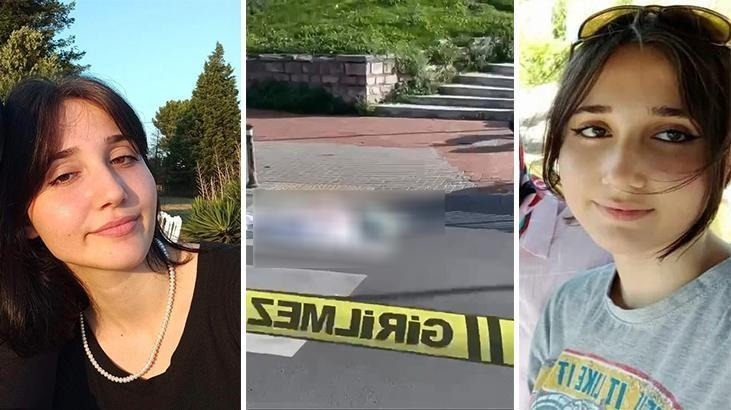
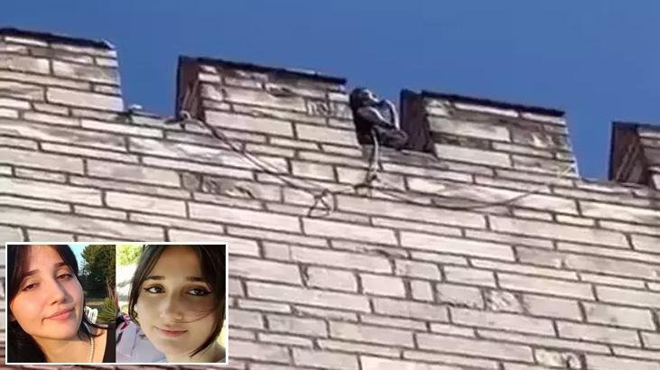
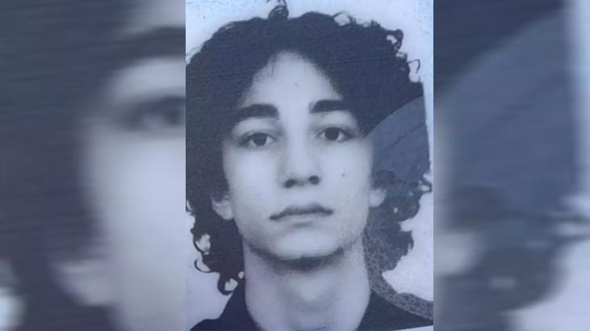

19 Yaşındaki Cani Semih Çelik, Yarım Saat Arayla İki Kadını Katletti: Tarihi Surlarda Vahşet
Fatih'te, kasap olduğu öğrenilen Semih Çelik (19), eski sevgilisi olduğu öğrenilen İkbal Uzuner'in (19) başını kesip Edirnekapı surlarından aşağı attı. Çelik'in Eyüpsultan'da da sevgilisi olduğu öğrenilen Ayşenur Halil'i (19) öldürdüğü ortaya çıktı. Türkiye'nin kanını donduran olayda ayrıntılar ortaya çıktı.
Olay, 16.00 sıralarında Derviş Ali Mahallesi Fevzipaşa Caddesi'nde meydana geldi. Edirnekapı surlarının üzerine çıkan Semih Çelik, İkbal Uzuner'in vücudunu parçalara ayırdıktan sonra, Uzuner'in başını ve vücudunun bazı bölümlerini surlardan aşağı attı. Boğazına ip bağlayan Çelik, surlardan atlayarak intihar etti.
İhbar üzerine olay yerine, polis ve sağlık ekipleri sevk edildi. Polis ekipleri çevrede geniş güvenlik önlemi alırken, Sağlık ekipleri tarafından olay yerinde ilk müdahalesi yapılan Çelik, ambulansla hastaneye kaldırıldı. Çelik hastanede hayatını kaybetti.
Polis ekiplerinin yaptığı incelemede Çelik'in, eski sevgilisi Ayşenur Halil'i de 15.30 sıralarında Eyüpsultan'daki evinde boğazını keserek öldürdüğü belirlendi.


